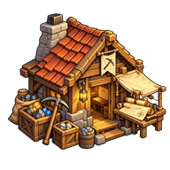

Spécification des cellules de ressources cachées, de leur découverte et de la fondation de campements spécialisés.
Comprendre ce que cela implique
La découverte doit précéder une installation volontaire, puis l’évolution du campement selon la ressource. L’influence des lieux existants neutralise les contenus concernés.
Cette conception est prévue : le moteur actuel de prospection crée directement un lieu producteur. Les paramètres non décidés sont identifiés sans valeurs inventées.

Dans cet article
Détails de référence
Texte de référence mis en forme et conservé dans l’historique de cet article. Les paragraphes datés peuvent décrire une évolution ou une étape antérieure.
Spécification du 25 octobre 2026 — à implémenter. Les règles ci-dessous décrivent le fonctionnement demandé, pas les possibilités actuelles du prototype.
À la définition de la play area, chaque cellule carrée de la grille utilisée par la heatmap reçoit un seul contenu. Cette grille de ressources est invisible aux joueurs : consulter la carte ou la heatmap ne révèle pas ses gisements.
| Contenu possible | Conséquence prévue |
|---|---|
| Pierre | Campement à faire évoluer vers une spécialisation dans la pierre |
| Bois | Campement à faire évoluer vers une spécialisation dans le bois |
| Fer | Campement à faire évoluer vers une spécialisation dans le fer |
| Or | Campement à faire évoluer vers une spécialisation dans l’or |
| Terre fertile | Campement à faire évoluer vers une spécialisation agricole |
| Rien | Aucun gisement à découvrir ou à exploiter |
La terre fertile décrit le potentiel du terrain, pas un stock transportable. La répartition et les rendements ne sont pas encore chiffrés.
Influence des lieux
La zone d’influence d’un lieu existant annule le contenu des cellules concernées. Un gisement neutralisé ne doit donc pas être proposé à la découverte ou à l’installation. Le critère géométrique exact (centre de cellule ou intersection) et le traitement des changements d’influence restent à préciser.
Découvrir puis installer
Les expéditions de prospection peuvent découvrir les ressources cachées. Un spécialiste transporté par un joueur peut aussi les découvrir, avec une chance dépendant de sa spécialité. La correspondance entre spécialités et ressources, les probabilités et la fréquence des tentatives restent à définir.
Découvrir un terrain ne construit pas automatiquement une exploitation. Après la découverte, le joueur peut envoyer une expédition d’installation ou se rendre lui-même sur place pour construire un campement. Le campement doit ensuite évoluer pour se spécialiser selon la ressource de la cellule. Les coûts, délais, effectifs et paliers de cette évolution restent à définir.
Exécution et sauvegarde
Le serveur conserve les contenus cachés, valide les découvertes, l’influence, les installations et l’évolution des campements. Le navigateur envoie les intentions et affiche uniquement les informations autorisées pour le joueur. Une réponse destinée au joueur ne doit pas contenir les ressources non découvertes. Les mêmes commandes et règles s’appliquent en GPS et sur carte fictive ; seules les mesures et validations de position peuvent différer.
L’intégration devra sauvegarder les contenus des cellules, les découvertes par joueur et les expéditions en cours. Le traitement d’une installation concurrente et l’effet de l’influence du nouveau campement sur son propre gisement doivent être précisés avant de raccorder la construction.
Écart avec le moteur actuel
PlayAreaGrid fournit déjà les cellules de la heatmap, sans leur attribuer ces six contenus. ResourceZone conserve des gisements distincts et leurs découvreurs. ProspectingService.inspectSegment détecte les gisements croisés par une expédition, sans différencier la découverte selon la spécialité. Dans Game, la découverte crée actuellement directement un lieu producteur : cette transition devra être remplacée par la découverte, puis l’installation et la spécialisation. La découverte aléatoire par spécialiste transporté et ce nouveau parcours de fondation ne sont pas encore raccordés.
Exemple de parcours prévu
Une cellule contient du fer et se trouve hors de l’influence des lieux existants. Une prospection la révèle au joueur. Celui-ci choisit de s’y rendre pour construire un campement, puis le fait évoluer vers l’exploitation du fer. La simple découverte n’accorde ni mine opérationnelle ni production immédiate.